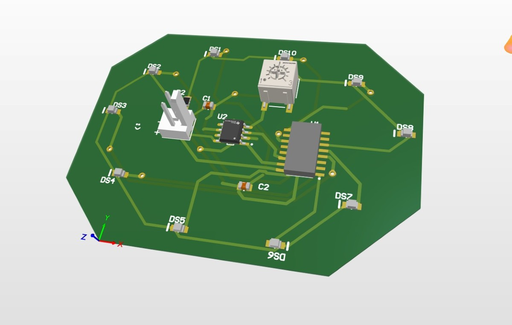
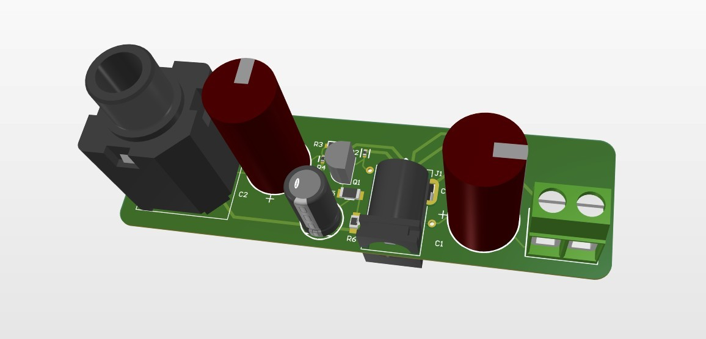
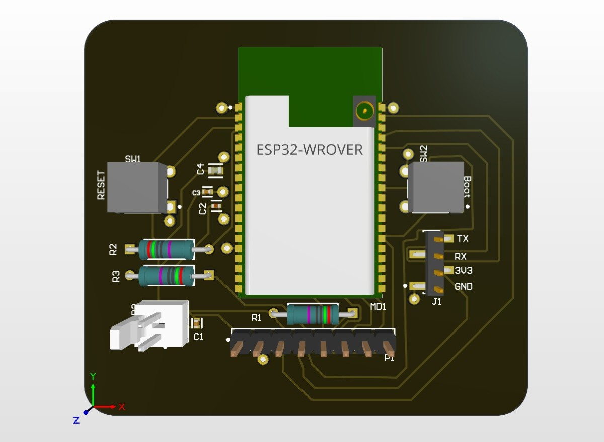
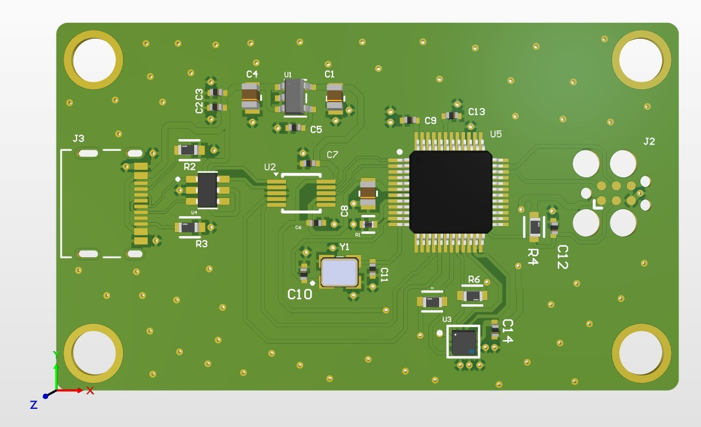
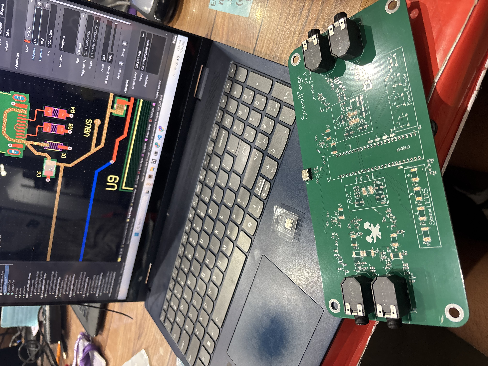

Project
PCB Evolution
I started working on my own PCB designs when my seniors on the High Voltage team introduced me to Altium. I was inspired by the PreCharge board they were working on and wanted to get good at designing my own boards, so while I was taking Electronics 1 as a sophomore, I made my own design projects to learn alongside the class.
The first is a basic LED Chaser PCB. As you can tell, it's pretty rough around the edges.

The next board that I made was sightly better. It was a BJT Amplifier inspired from a design project that I did in my Electronics 1 class.

After that I wanted something more a bit more challenging. The next two designs I made were microcontrollers. One ESP32 Wroom module and then a Texas Instruments MSPM0 Module. These projects really helped me get better at layout and visual aesthetic for my designs.


My most recent project is a carrier board for a CMOD A7. It really captures the growth of my circuit designs well.

SoundForge grew into its own project — read more about it here →